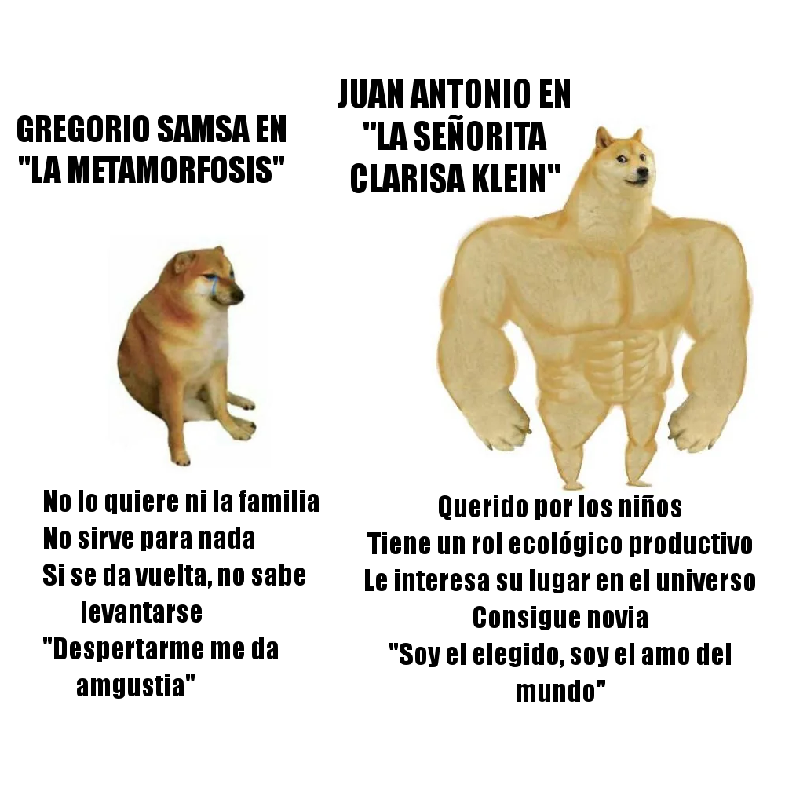
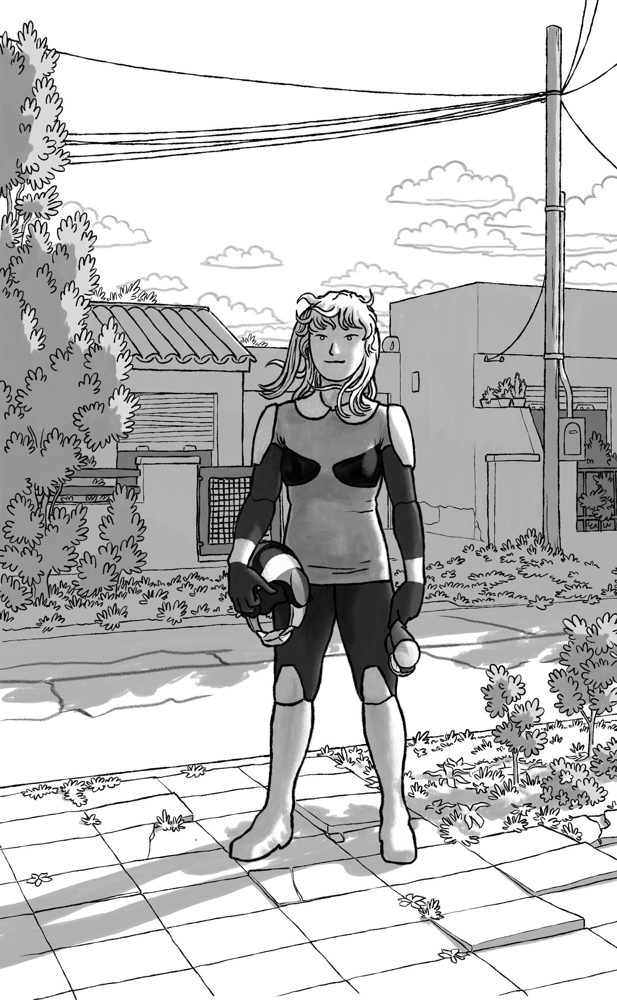
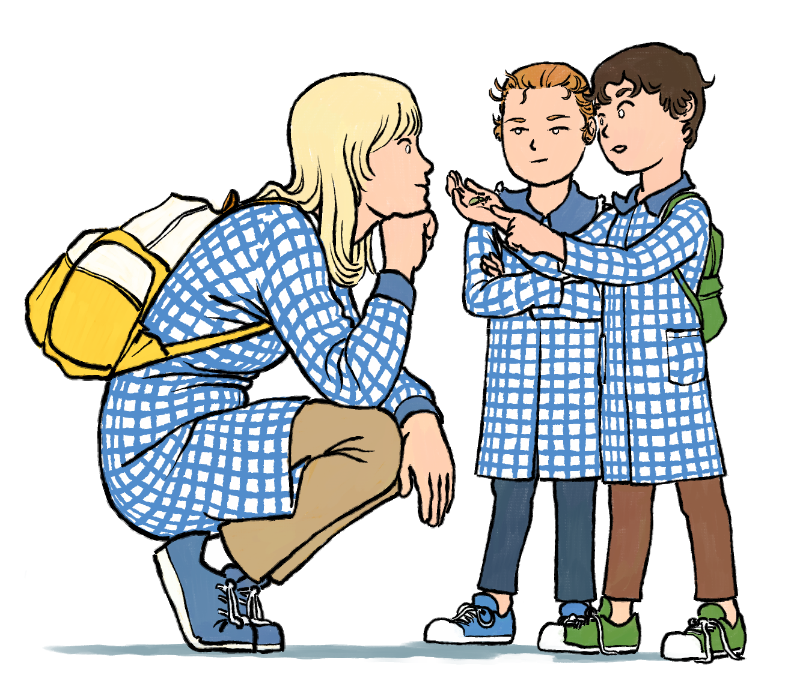
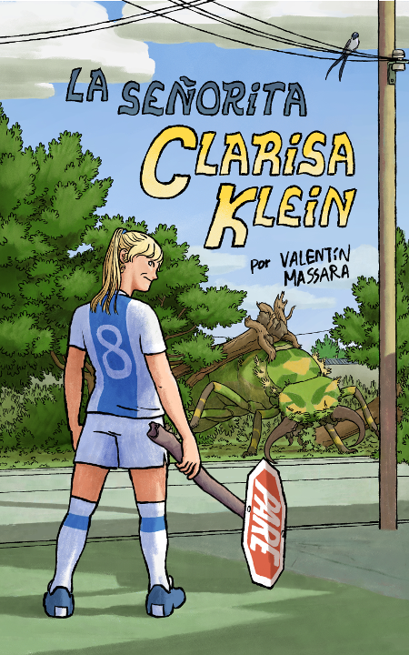

La señorita Clarisa Klein
comentarios adicionales sobre la novela
¿Qué hay en La señorita Clarisa Klein? Algunas fantasías convenientes. Qué no hay: personajes hablando interminablemente sobre el trauma de su existencia. Este es el resumen sin contexto:

Sí, es la historia de origen de un superhéroe, pero no es un prólogo de una historia más grande, sino una obra cerrada. Lo que busca establecer (como miembro de su género) es (1) cómo la protagonista adquirió poderes fuera de lo normal (un trámite) y (2) qué la motiva a usar esos poderes de una manera prosocial (lo cual es el centro de la narrativa de superhéroes).
Está escrita en tono de broma, pero vale aclarar que, mientras hay algo de sátira, no se pretende como una deconstrucción, parodia o subversión del género de superhéroes. He buscado ser fiel y honesto con el fundamento del género; sólo evité incorporar la lista interminable de tropes que se han acumulado a lo largo de décadas y que se suelen dar por sentadas.
El rango de representación está garantizado al incluir como deuteragonista a un invertebrado del clado ecdysozoa. Mucha gente habla del “viaje del héroe” y alguien puede mencionar el de la heroína también, pero ¿cuántos se atreven a cuestionar esa matriz de pensamiento hegemónica y abordar el viaje del escarabajo? Aquí presentamos un resumen de la literatura previa y las nuevas contribuciones al respecto.

Hay exactamente una ilustración (además de la portadilla y el esquema del capítulo 17). Clarisa se hace esperar para ponerse el traje y ser oficialmente un superhéroe. No hay razón para no consentir con este adelanto a quien se toma la molestia de venir a este rincón desconocido de internet.

Por último, creo que la idea de hacer una lista de reproducción que represente el mood de la obra es bastante apreciada. A mí me parece un poco tonta. Es como colgarse de artistas consagrados por la historia; una forma un tanto parásita de pensar el arte, como una especie de tokenización. Pero bueno, acá hay una lista de reproducción de la música que me gusta, un tema por capítulo. (No figura el Rondo alla zingarese).

Próximamente
La señorita Clarisa Klein

Novela (Kindle y tapa blanda). 242 pp.
Clarisa Klein es una maestra de jardín que a ratos conduce a sus alumnos, a ratos es conducida por ellos. En una visital del jardín a un museo, sufre un pequeño accidente, de los que dan grandes poderes y alguna responsabilidad.
Mientras, un insecto de un tamaño que debería ser ilegal deambula por la ciudad, amenazando la vida y la propiedad, siendo una fuente de problemas tanto para humanos como para sí mismo. ¿Debemos ser éticos, aunque el universo no lo sea? Bueno, no importa por el momento. En el calor de la situación, una oscura agencia estatal busca reclutar a Clarisa para ungirla como una especie de poderosa super… eh, maestra de jardín capaz de abordar la crisis.
En esta historia todo es lo que parece, aunque lo que parece es algo fuera del tarro. Una aventura apta para todo público en la que la ciencia (y el fútbol y la burocracia) son una excusa para el sarcasmo y la fantasía.